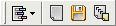

"அழி" பொத்தான் பதிவை காலி செய்யும்.
"அழி" பொத்தான் பதிவை காலி செய்யும்.  "சேமி" பொத்தான் ஒரு நிலையான கோப்பு தேர்வு சாளரத்தைத் திறக்கும், இது
பதிவு உள்ளடக்கங்களை எங்கு சேமிக்க வேண்டும் என்பதைத் தேர்வுசெய்ய உங்களை
அனுமதிக்கிறது.
"சேமி" பொத்தான் ஒரு நிலையான கோப்பு தேர்வு சாளரத்தைத் திறக்கும், இது
பதிவு உள்ளடக்கங்களை எங்கு சேமிக்க வேண்டும் என்பதைத் தேர்வுசெய்ய உங்களை
அனுமதிக்கிறது. இந்த பக்கம் மறுபெயரிடும் செயல்முறையின் முடிவுகளால் நிரப்பப்பட்டுள்ளது.
எப்போதும் தெரியும் கோப்புகள் கருவிப்பட்டிக்கு கூடுதலாக, பதிவுக்கான கருவிப்பட்டி காட்டப்படும்:

இதோ கட்டளைகள்:
"அழி" பொத்தான் பதிவை காலி செய்யும்.
"சேமி" பொத்தான் ஒரு நிலையான கோப்பு தேர்வு சாளரத்தைத் திறக்கும், இது
பதிவு உள்ளடக்கங்களை எங்கு சேமிக்க வேண்டும் என்பதைத் தேர்வுசெய்ய உங்களை
அனுமதிக்கிறது. மறுபெயரிடல் நன்றாக இருக்கும்போது, பதிவில் கோப்பின் பழைய மற்றும் புதிய பெயரைக் குறிப்பிடும் ஒரு வரி சேர்க்கப்படுகிறது. இது பச்சை நிறத்தில் எழுதப்பட்டுள்ளது.
கோப்பு மறுபெயரிடப்படாவிட்டால், ஒரு எளிய செய்தி (நீல நிறத்தில்) அல்லது பிழை (சிவப்பு நிறத்தில்) காட்டப்படும்.
முதல் வழக்கு ஒரே மாதிரியான இலக்கு பெயரால் ஏற்படுகிறது (கோப்பை மறுபெயரிட வேண்டிய அவசியமில்லை) அல்லது கோப்பில் ஐடி 3 தகவல் இல்லை என்றால் (எம்பி 3 மறுபெயரிடுவதற்கு). அதுவும் முடியும் மூலக் கோப்பு இனி இல்லாதபோது நடக்கும் (எ.கா. நீங்கள் அதை கைமுறையாக நகர்த்தினீர்கள்).
பிழைகள் பல காரணங்களால் ஏற்படலாம். எடுத்துக்காட்டாக, புதிய இலக்கு பெயர் ஏற்கனவே மற்றொரு கோப்பால் பயன்படுத்தப்பட்டிருந்தால், பெயரில் தவறான எழுத்துக்கள் இருந்தால் அல்லது கோப்பு ஒரு நிரலால் பூட்டப்பட்டிருந்தால். வழக்கமாக எழுதப்பட்ட செய்தி சாளரங்கள் திரும்பும் ஒன்றாகும்.
பிழையாக பட்டியலிடப்பட்ட "செயல்பாடு வெற்றிகரமாக முடிந்தது" என்ற செய்தியை நீங்கள் பெற்றால், உண்மையான பிழை செய்தி இழக்கப்பட்டது அல்லது பிழை இல்லை என்று பொருள் சரியாக கண்டறியப்பட்டது. நீங்கள் சிக்கலை மீண்டும் உருவாக்க முடிந்தால் என்னை தொடர்பு கொள்ளவும்.
"கோப்பில் பதிவைச் சேமி" விருப்பத்துடன் இதைச் செய்யலாம் விருப்பங்கள் சாளரத்திலிருந்து .
விருப்பம் இயக்கப்பட்டால், மறுபெயரிடும் செயல்பாட்டிற்குப் பிறகு பதிவின் உள்ளடக்கங்கள் உரை கோப்பில் சேமிக்கப்படும் (UTF-8 இல் குறியாக்கம் செய்யப்பட்டுள்ளது).
இந்த கோப்பில் இரண்டு நெடுவரிசைகள் உள்ளன (தாவல் எழுத்து மூலம் வரையறுக்கப்பட்டுள்ளது). முதலாவது வெற்றிகரமான செயல்பாடுகளுக்கு "v" மற்றும் பிழைகளுக்கு "x" ஆகியவற்றைக் கொண்டுள்ளது. இரண்டாவதாக உள்ளது செய்தி.
"பிற்சேர்க்கை" விருப்பமும் இயக்கப்பட்டிருந்தால், கோப்பு மேலெழுதப்படாது: புதிய பதிவு உள்ளீடுகள் இறுதியில் சேர்க்கப்படும்.